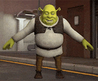
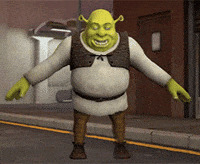

ola mundo!
Cabeçalho de nivel 1
Cabeçalho de nivel 2
Cabeçalho de nivel 3
Cabeçalho de nivel 4
Cabeçalho de nivel 5
Este é um a parágrafo
Este é um a parágrafo
Este é um texto muito grande,
que eu desejo
quebrar a linha
Pagina do sesi
Senai
 

Paragrafo com caracter <br>
® ™ € £ ¥ ¢ δ ↑
Inserindo um emoji ὠ ❤
Texto em negrito
Texto importante
H1 italico
Texto enfatizado
Texto Marcado
Texto Menor
Texto Excluido
Texto inserido
42
33
Texto sublinando
Videos do youtube
Logo
Acordar
Tomar banho
Tomar café
Escovar os dentes
Ir para escola no horario
- Acordar
- Tomar banho
- Tomar café
- Escovar os dentes
- Ir para escola no horario
- Acordar
- Tomar banho
- Tomar café
- Escovar os dentes
- Ir para escola no horario
- Carvão
- Carne
- Bebidas
- Arroz
- Carne
- Picanha
- Cupim
- Ponta de peito
- HTML
- Linguagem de marcação para conteúdo de um site
- CSS
- Linguagem de estilização do Site
- Javascript
- Linguagem de programação